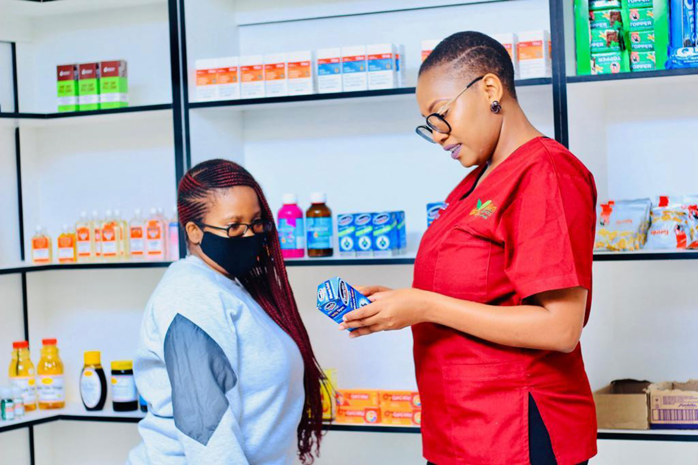
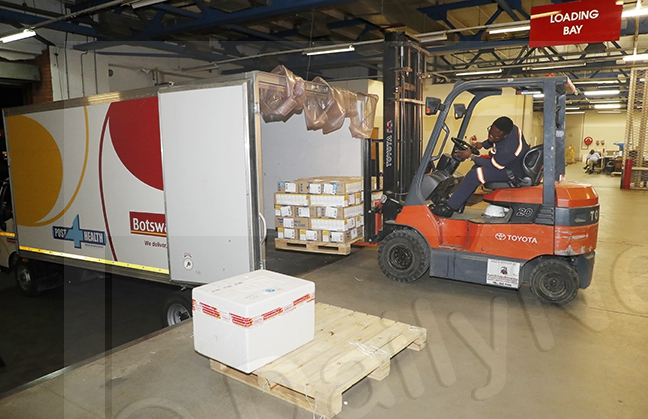

Pharmaceutical suppliers rely on BoMRA's platform to bring safe medicines to market. From registering a new batch to tracking regulatory approval, everything is managed in one place.

Licensed pharmacies and health facilities gain full visibility into their stock levels, can place supply requests and report adverse drug reactions all within a secure, role-controlled environment.
Each user type gets a tailored experience with tools and views specific to their mandate.
BoMRA-appointed inspectors use the platform to schedule and record pharmacy inspections, document findings and compliance status and review adverse drug reaction reports to support public health oversight across Botswana.
BoMRA administrators are the backbone of the regulatory process. They review and approve medicine registration applications, issue and manage operating licenses, oversee all user accounts and generate comprehensive regulatory reports.

Suppliers register new medicine batches, submit them for regulatory approval, and once certified, fulfil delivery orders to licensed facilities. Every batch is traced from registration to distribution.
Pharmacies and health centres monitor their medicine inventory with real-time expiry status indicators, submit supply requests when stock runs low and report any adverse drug reactions observed in their patient populations.
A streamlined four-step process ensures every medicine reaching Botswana's facilities is safe, approved and traceable.
Suppliers register a medicine batch and submit it for BoMRA regulatory review.
BoMRA administrators assess the application and issue a certificate upon approval.
Certified batches are delivered to licensed facilities whose stock is updated automatically.
Inspectors conduct site visits; facilities report adverse reactions; administrators generate reports.
The Botswana Medicines Regulatory Authority is the national body responsible for ensuring that all medicines circulating in Botswana meet standards of safety, efficacy and quality.
This digital platform supports BoMRA's mandate by bringing the full regulatory lifecycle online reducing paperwork, improving traceability and protecting public health.
Every batch approved by BoMRA meets internationally recognised safety and efficacy standards before reaching patients.
From registration to delivery, every medicine is traceable enabling rapid responses to adverse events or recalls.
Role-based access ensures each stakeholder only interacts with the functions relevant to their regulatory mandate.